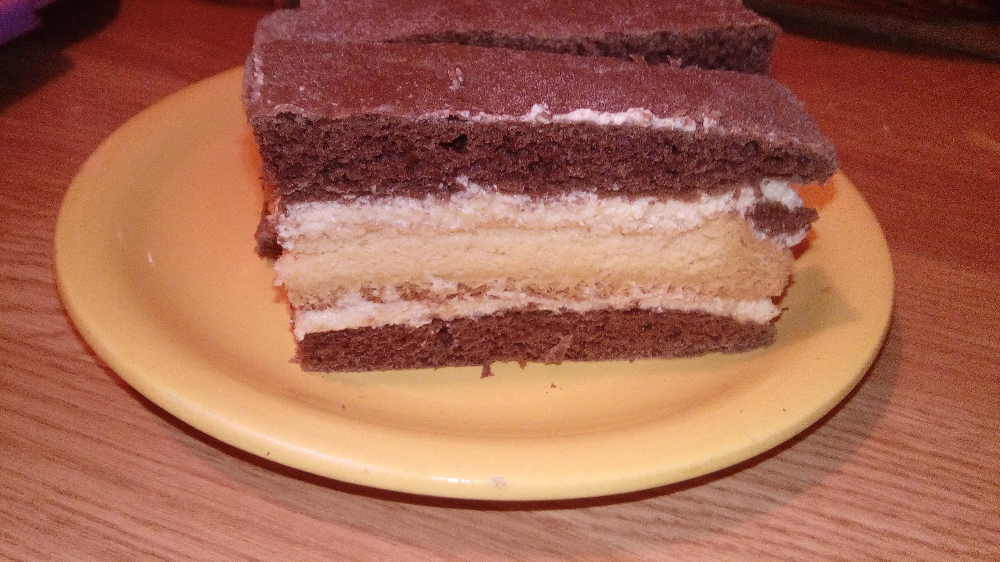

Welcome Slice

This is an older recipe.
I already made a couple of times and it's always and everyone loves it.
Ingredients
For cocoa dough:
- 20 dkg of fine flour
- 5 dkg margarine (or butter, lard)
- 5 dkg sugar (crystal)
- 3 dkg unsweetened cocoa powder
- 1 egg
- 10 g of shale (or 1 packet of baking powder)
- 1 dl milk
For the sponge cake:
- 6 eggs
- 6 tablespoons fine flour
- 6 tbsp with sugar
- 0.5 pack of baking powder
To the cream:
- 1 egg
- 5 dl milk
- 3 tablespoons fine flour
- 20 dkg powdered sugar
- 20 dkg margarine (or butter)
- 1 packet of bourbon and 3 packets of plain vanilla sugar or 1 vanilla stick)
Steps
Cocoa dough:
- The ingredients of the cocoa dough are combined to form an extensible dough.
- The dough is halved and two approx. We provide a 24 × 36 cm (the size of our baking tray) sheet of it. (It will be a very thin dough, no need to be scared!)
- We provide a 24 × 36 cm (the size of our baking tray) sheet of it. (It will be a very thin dough, no need to be scared!)
- Place it on the back of a lightly floured baking sheet and prick it with a fork to prevent it from blistering.
- Bake at 180 degrees for a few minutes (5-6 minutes), but be careful because it will cook quickly! (If we overcook the sheets, they can dry out easily.)
- While still warm, use a long-bladed knife to detach it from the back of the baking tray, then gently slide it off.
- Allow to cool.
Sponge cake:
- Beat the egg whites hard.
- Add the sugar.
- Then the egg yolks one by one.
- Finally the baking powder.
- We make it in the same baking tray as we baked the plates on.
Preparation of cooked vanilla cream:
- Add a little milk to the flour, stir.
- Add the eggs (which we also mix with).
- Pour the remaining milk little by little.
- Scrape in the inside of the vanilla stick or add the vanilla sugars.
- Bring to a simmer over low heat stir constantly when it's thickens turn off the heat and allow to cool.
- Whisk the margarine / butter with the powdered sugar with an electric whisk.
- When the milk cream has cooled down enough, mix it well with the frothy margarine / butter with a machine whisk.
Composition of the cake:
- A cocoa sheet is placed on the bottom, this comes half of the cream, place the sponge cake on it, then spread the other half of the cream on it and cover with the other cocoa sheet.
- Place in the fridge for resting.
- To be sliced, the cocoa sheets with the cream must soften for 1 day.
- Cut into slices as desired after resting.